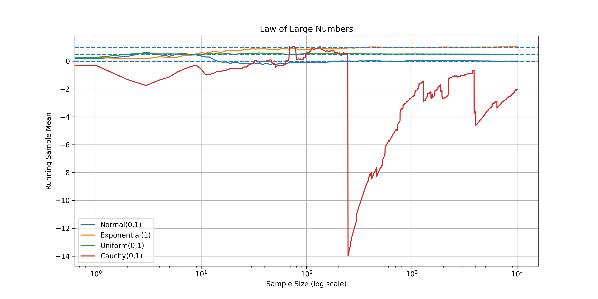
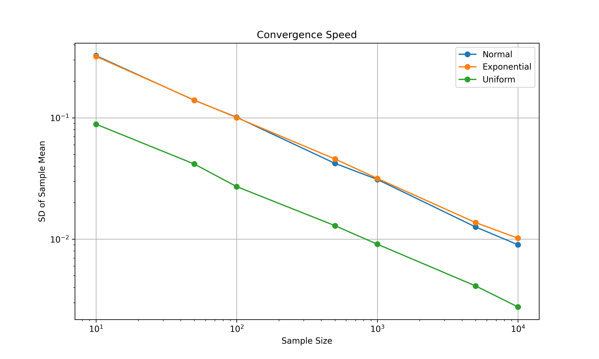
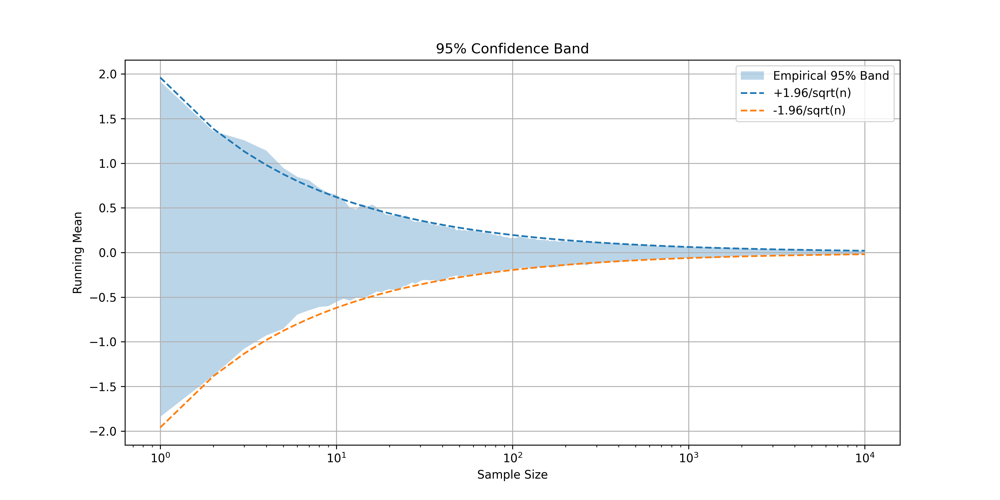
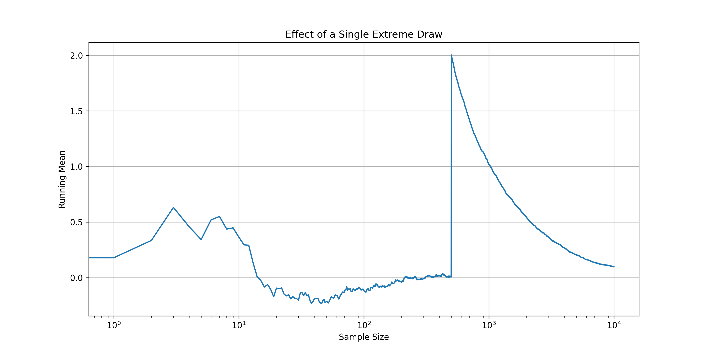

Statistical Simulations using NumPy & Matplotlib
Simulation Types
Sample Size
Replications
Reproducible

Demonstrates how sample means from different distributions (Normal, Exponential, Uniform, Cauchy) converge to their true values as sample size increases.
Normal(0,1) Exponential(1) Uniform(0,1) Cauchy - Fails!
Verifies the mathematical relationship: SD(X̄ₙ) = σ/√n. Shows that standard deviation decreases at the same rate across all distributions on a log-log scale.
SD decreases √n relationship 300 replications Log-log scale
Shows empirical vs theoretical confidence intervals. The band width shrinks following: μ ± 1.96σ/√n. Demonstrates how uncertainty decreases with sample size.
Empirical band Theoretical bound 95% confidence 300 simulations
Illustrates how a single extreme value (1000) creates a spike in the running mean, but the effect gradually disappears as sample size grows, demonstrating robustness of LLN.
Single outlier Extreme draw Convergence shown Log scale